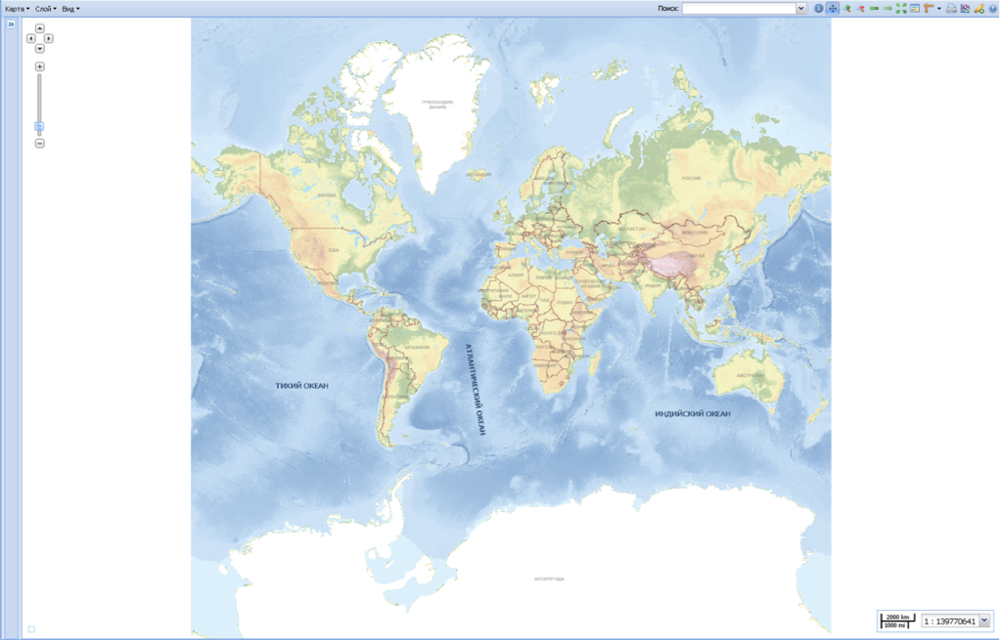

Приложение OceanViewer открывается в Web-браузере по ссылке http://gis.esimo.net:8080/OceanViewer2
Приложение по умолчанию запускается с активной базовой картографической основой ЭКО 3.1 в проекции Меркатора.
Для загрузки ранее сохраненного проекта необходимо ввести в адресную строку браузера URL-адрес Карты, который приложение автоматически сформировало при предыдущем сохранении Карты (например, http://gis.esimo.net:8080/OceanViewer2/composer#maps/2069).